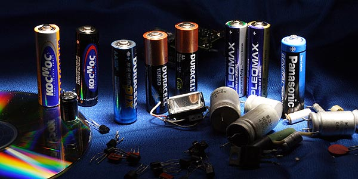

Рекомендации по использованию батареек и аккумуляторов

- Никогда не приобретайте батарейки в метро, электричках и тому подобных местах! Купив однажды эти батарейки типа «четыре за десяточку», вы имеете все шансы распрощаться со своим цифровым устройством.
- Нередко стоимость батареек завышается в два раза, а то и больше. Если в этом магазине батарейка «NNN», стоит в два раза дороже, чем в магазине напротив, то это отнюдь не означает, что она будет в два раза дольше работать.
- Не имеет абсолютно никакого значения, батареи какой фирмы вы поставите в плеер «NNN».
- В устройствах, потребляющих относительно большой ток (фонарики, плееры, фотоаппараты) стоит использовать только щелочные (алкалиновые) батарейки - они максимально эффективны именно при значительном энергопотреблении.
- Солевые («обычные», угольно-цинковые), будут отлично работать в часах, ИК пультах и прочих устройствах, рассчитанных на работу от одного комплекта батарей в течении года и более. Надежды на то, что алкалиновые батареи, имеющие огромный срок хранения, будут работать дольше, не оправдываются.
- «Начатые» (даже «чуть-чуть») батарейки будут хранится гораздо меньше, чем абсолютно новые. Срок годности, обозначенный на корпусе, относится только к совершенно неиспользовавшимся батареям.
- Холодильник (тем более морозилка!) совсем не является тем «сухим и прохладным» местом, где все рекомендуется хранить.
- Солевые батарейки практически неспособны работать на морозе.
- Солевые батарейки нельзя ПЕРЕзаряжать, но если сделать специальное «подзарядное» устройство, то можно будет ПОДзаряжать. Только не проще ли пользоваться аккумуляторами?
- Иногда в продаже встречаются литиевые батарейки привычного типоразмера АА. Они стоят гораздо дороже любых щелочных элементов, а, главное, имеют в два раза большее напряжение - три вольта против обычных полутора. Будьте внимательны!
- Самые экономчески целесообразные батареи на сегодня - именно пальчиковые АА. Как меньшие (АAА), так и большие (R20), стоят дороже за одно и тоже время работы (ёмкость R20 немногим превосходит АА, хотя первые в два раза дороже и в три раза больше).
- Литиевые элементы имеют множество плюсов, которые вполне «компенсируются» их ценой. Есть смысл выбирать менее «разорительный» типоразмер «123», а не экзотические типы (PX28L какой-нибудь), которые потом не сможете найти (а то и позволить себе - бывают батареечки по 800 рублей!).
- Весьма распостраненный тип CR2 вдвое дороже за то же время работы, чем 123 элемент. Едва ли это оправданная плата за три сэкономленных миллиметра размера.
- Литиевые элементы фирм Duracell и Energizer стоят в полтора-два раза дороже всех прочих. При этом работают примерно столько-же (сравнивал с Samsung, TDK и Panasonic; Panasonic работал даже больше, чем Duracell!).
- На морозе литиевые батареи работают лучше, чем щелочные, но до большей "выгодности" дело все равно не доходит. (см. таблицу ниже)
- Лучшие батарейки - это аккумуляторы!
| Тип | Емкость при температуре -20?С по сравнению с +20?С |
|---|---|
| Солевые (бат) | 0% |
| Щелочные (бат) | 7% |
| Литиевые (бат) | 25% |
| NiMH (аккум) | 30% |
| NiCd (аккум) | 75% |
АККУМУЛЯТОРЫ
Общие рекомендации
- На корпусе никелевых аккумуляторов часто пишут - «1000 циклов перезарядки», но никогда не пишут, сколько условий надо соблюсти, чтоб этот потенциал был реализован. Эти условия (и то не все) и изложены ниже.
- Нет «плохих» и «хороших» типов аккумуляторов - «устаревшие» никель-кадмиевые аккумуляторы бывают незаменимы, а новейшие литий-полимерные имеют целый букет недостатков.
- Именно никель-кадмиевые аккумуляторы являются рекордсменами по количеству рабочих циклов - до 4000!
- Очень распостранено мнение, что аккумуляторы надо полностью разряжать перед зарядкой. Этого нельзя делать! Старайтесь никогда не разряжать аккумуляторы «в полный ноль» - это крайне отрицательно сказывается на их работоспособности. Большинство современных плееров, фотоаппаратов, телефонов и т.д. самостоятельно контролируют процесс разрядки, и отключатся вовремя (при падении напряжения до 1 В для NiCd и NiМh). А вот фонарик способен «убить» аккумуляторы, это касается так же старой техники, и дешевой современной - их надо отключать сразу, как аккумулятор сядет. Подробности для каждого типа см. ниже.
- По приведенной причине очень нежелательно ставить одновременно разные аккумуляторы, а так же одинаковые, но на разных стадиях зарядки. Ведь более заряженные будут принудительно разряжать менее заряженные, и могут их полностью разрядить.
- Штатный ток зарядки для любых распостраненных аккумуляторов - 10% их емкости. Принимая во внимание КПД процесса зарядки аккумулятора (~75%), получаем время зарядки около 14 часов. Если время меньше, то ресурс аккумулятора уменьшается. Хотя у литиевых аккумуляторов он снижается не так значительно, но и для них зарядка быстрее чем за час крайне нежелательна.
- Механические повреждения (даже небольшие вмятины) могут очень сильно уменьшать емкость, и стать причиной взрыва в случае литиевых батарей.
- Хранить аккумуляторы надо в заряженном состоянии, причем следует раз в полгода их «тренировать» - разряжать, и заряжать вновь.
- Точно так же, как полная разрядка, вредит и чрезмерный заряд - когда полностью зарядившийся аккумулятор продолжают заряжать.
- Все аккумуляторы способны давать равномерно большой ток, что делает их незаменимыми в прожорливой цифровой технике. В отличии от одноразовых батарей, прекращение работы при полной разрядке наступает резко, а не постепенно.
- Заряжать аккумуляторы лучше всего импульсным (не путать с переменным!) током.
Литий-полимерные (Li-Pol)
- Наиболее новые, наиболее дорогие и «модные».
- Главный их плюс - возможность изготовления аккумуляторов любой формы.
- У них отсутствует «эффект памяти», что очень хорошо.
- Ресурс самый маленький - в районе трехсот циклов, но технология постоянно совершенствуется.
- Имеют ограниченный срок хранения - два года. При этом неважно, эксплуатируются они, или лежат в заводской упаковке. Так что есть смысл интересоваться датой изготовления литиевых аккумуляторов - Li-Ion это тоже касается. Проблема лишь в том, что производители скромно умалчивают об этой дате...
Литий-ионные (Li-Ion)
- Признанный лидер использования в качестве штатного аккумулятора. Технология очень хорошо разработана, почти достигнут предел миниатюризации и надежности.
- Ресурс 500-600 циклов. Принимая во внимание ограниченный срок службы, больше и не надо..
- Эффект памяти отсутствует.
- Номинальное напряжение 3.6 вольта.
- В целях безопасности, следует заряжать Li-Ion только специальными зарядными устройствами. Дело в том, что существует возможность взрыва этих батарей. У меня есть опыт ожогов от калия и натрия, так что никакого желания пополнять эту коллекцию еще и литием я не имею. Фирменные аккумуляторы в сочетании с родным з.у., однако, безопасны.
- Литиевые батареи обычно содержат электронную схему, призванную предохранять ее от короткого замыкания, неправильной полярности заряда и т.д. Так же может происходить контроль температуры, ресурса, токов зарядки с разрядкой. Скоро аккумуляторы научатся материться и просить чаевые.
- Срок службы - два-три года с момента изготовления, способов его продлить вроде не существует. А вот укоротить можно.
- Рекомендуемая производителями глубина разряда - 80%. Обычно при достижении этого порога устройство, в котором используется аккумулятор, советует его зарядить.
- Обилие электронной автоматики в аккумуляторе и зарядном устройстве позволяет полностью реализовывать возможности Li-Ion батарей.
Hикель-кадмиевые (NiCd)
- Номинальное напряжение 1,2 вольта, на свежезаряженном может быть до 1,5 В.
- Самый старый, из рассматриваемых, тип. У него наименьшая удельная емкость (максимум 1000 мАч для типоразмера АА), наибольший срок службы - как уже упоминалось, он может составлять несколько тысяч циклов, и наивысшая морозостойкость.
- Обладают «эффектом памяти» - если начать заряжать элемент, на котором еще остался значительный заряд, то последний не будет увеличиваться. Метод борьбы с этим явлением таков: надо раз в несколько циклов разряжать их до напряжения в один вольт, и полностью заряжать. Совсем не обязательно делать это каждый цикл. Иногда старые, и вроде уже «сдохшие», элементы, удается восстановить, повторив разрядку до 1В с последующей зарядкой четыре - пять раз.
- Зарядные устройства для этого типа обычно очень просты, и не умеют автоматически отключаться при достижении полного заряда. NiCd аккумы очень чувствительны к избыточной зарядке, так что следите за временем внимательно.
- Не используйте с ними «быстрых» зарядных устройств! Быстрые - это те, что заряжают аккумуляторы за полчаса - час. Это приведет к сокращению ресурса во много раз! В инструкциях к таким зарядным устройствам обычно пишут «только для NiMH аккумуляторов».
Никель-металлогидридные (NiMH)
- По емкости на один элемент вдвое превосходят NiCd, достигая 2500 мАч - а это больше, чем у лучших батарей одноразового использования.
- При покупке старайтесь сразу проверить аккумуляторы в своей технике. Дело в том, что размер аккумуляторов не очень строго стандартизован, в отличии от батареек. Производители техники стараются сделать батарейный отсек предельно компактным, а производители аккумуляторов делают свои изделия на пол миллиметра толще, стремясь достичь рекордной емкости. В отдельных случаях это приводит к тому, что аккумулятор либо не помещается в отсек, либо с огромным трудом оттуда вынимается.
- NiMH аккумуляторы способны очень стабильно работать при больших токах разрядки. Это свойство очень полезно, например, в фотовспышках.
- Эффект памяти выражен незначительно - если разрядку до 1В проводить раз в месяц, то этого будет достаточно. Можно и почаще, но только не каждый цикл использования - это будет отрицательно сказываться на элементе.
- Быстрые зарядки допустимы, несколько сотен циклов аккумуляторы вполне способны прожить.
- На морозе я замерзаю гораздо быстрее, чем NiMH, так что и морозостойкость нельзя не признать достаточной.
- Ну и цена за ампер-час - самая низкая среди аккумуляторов.
Источники
tehpoisk.ru - Рекомендации по использованию батареек и аккумуляторов